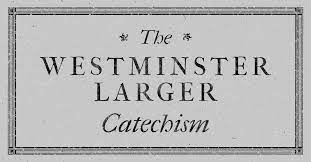

基督坐在父神右边
基督坐在父神右边
总纲
- 坐在父神右手边的意思
- 耶稣坐在天父右手边的意义
- 应用
复习 - 基督的降卑与高升的九步

前导

- 使徒信经
- ...第三天从死人中复活，升天，坐在全能父上帝的右边...
坐在父神右手边的意思
“坐”的含义
- 耶稣并不是一直都是实体性的坐着
- 只在司提反被打死之前所看到的异象，耶稣是“站”在天父右边。
- 而且耶稣也曾经在启示录中所记载的，向约翰显现。
“坐”的含义

- 「坐」在代表大功告成
来十11-12 【来十11】「凡祭司天天站着事奉神，屡次献上一样的祭物，这祭物永不能除罪。」 【来十12】「但基督献了一次永远的赎罪祭，就在神的右边坐下了。」
-
「坐」在宝座上代表执行审判、管理、权柄
- 马太福音19:28
耶稣说：“我实在告诉你们：你们这跟从我的人，到复兴的时候，人子坐在他荣耀的宝座上，你们也要坐在十二个宝座上，审判以色列 - 基督教要义：所谓"坐"，无非是指他主持天上的裁判而已。
- 马太福音19:28
“右手边的”含义-文化和传统
“右”边在许多文化和传统上代表了"强壮"(strength)或是其他正面的意思。
例子:
- right hand man
- that's right
- right or wrong
- menteri kanan
- 无出其右
圣经里提到的“右边”
在圣经中，右手或是右手边，有以下的象征:
力量之手（例如出埃及记 15:6）
耶 和 华 阿 ， 你 的 右 手 施 展 能 力 ， 显 出 荣 耀 ； 耶 和 华 阿 ， 你 的 右 手 摔 碎 仇 敌 。权柄
启示录 5:1 我看见坐宝座的右手中有书卷，里外都写着字，用七印封严了。祝福
(例如创世纪48：14）以色列伸出右手来，按在以法莲的头上，以法莲乃是次子；又剪搭过左手来，按在玛拿西的头上，玛拿西原是长子。
圣经里提到的“右边”
在圣经中，右手或是右手边，有以下的象征:
保护者
（詩篇16:8）詩篇16:8 - 我将耶和华常摆在我面前， 因他在我右边， 我便不致摇动。至高的地位
（列王纪上2：19）
- 于是，拔示巴去见所罗门王，要为亚多尼雅提说；王起来迎接，向她下拜，就坐在位上，吩咐人为王母设一座位，她便坐在王的右边。
诗篇110：1
（大卫的诗。）耶和华对我主说：祢坐在我的右边，等我使祢仇敌作祢的脚凳。智慧/道德
传道书10:2
- 智慧人的心居右；愚昧人的心居左。
耶稣坐在天父右手边的意义
1. 耶稣战胜了死亡
- 耶稣坐在天父右手边，证明他已经复活，并且战胜了死亡。
- 希伯来书 1:3 他是神荣耀所发的光辉，是神本体的真像，常用他权能的命令托住万有。他洗净了人的罪，就坐在高天至大者的右边。
耶稣坐在天父右手边的意义
2. 至高的地位
- 耶稣本是三位一体的第二位格，祂坐在神的右边，意思是祂有至高的地位,乃与父神同等。
- 所以坐在神的右边意味着他也拥有属于神的力量和权柄。
- 彼得前书3：22 耶稣已经进入天堂，在神的右边，众天使和有权柄的并有能力的，都服从了他。
耶稣坐在天父右手边的意义
3.耶稣是那完全赎罪的祭司
- 和旧约的祭司不同，耶稣基督的献祭是一次性并且是完全作成赎罪的工作了
- 所有相信他的人的罪必得赦免。
- 希伯来书10：12 但基督献了一次永远的赎罪祭，就在神的右边坐下了，
耶稣坐在天父右手边的意义
4.耶稣为我们代祷
- 耶稣并没有停止祂的祭司职分，而是继续不断为祂的子民代求(intercede)。并赐下恩典和福分于祂的教会。
- 罗马书8:34 谁能定他们的罪呢？有基督耶稣已经死了，而且从死里复活，现今在神的右边，也替我们祈求。
耶稣坐在天父右手边的意义
5.统治和审判全地
- 耶稣就是那万王之王，是启示录里那用铁杖管辖万国的君主。
- 祂保守祂的教会，直到那新天新地
- 诗篇110:1-2 1 耶和华对我主说：“你坐在我的右边，等我使你仇敌做你的脚凳。” 2 耶和华必使你从锡安伸出能力的杖来，你要在你仇敌中掌权。
- 基督教要义：
父定意在基督的身上得荣耀，又藉他执行统治，所以说基督坐在父的右边；
应用
- 常存着盼望
- 不要惧怕宣扬福音和申张公义
西敏寺大要理问答：54问

问：基督是如何在「坐在父的右边」一事上升高的？
答：（一）祂既是神，又是人，被父神升为至高1，满有喜乐2、荣耀3，并得着胜过天上地下一切的权柄4； （二）祂招聚、护卫祂的教会，制伏他们的仇敌；又用各样恩赐和恩典5，装备祂的仆人和子民，并为他们代求6。